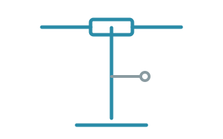
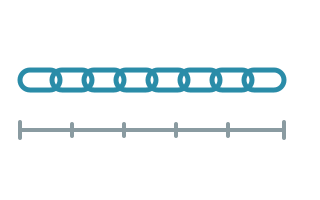

Services
Four kinds of job cover almost everything that comes through the door. Prices are on the pricing page.
Tune-ups
The basic tune-up checks and adjusts brakes and gears, sets tyre pressure for your weight and tyre width, and tightens loose bolts to their torque values. The full service adds a drivetrain clean and a wheel true check.
Brakes
Hydraulic brake bleeds, pad replacement and rotor truing. We bleed with the correct fluid for your brand, since mineral oil and DOT fluid are not interchangeable.
Wheels
Wheel truing, spoke replacement and tubeless setup. A wheel that wobbles by more than a millimetre at the rim is trued before it goes back on the bike.
Drivetrain
Chain, cassette and chainring replacement. We check chain wear with a gauge and recommend replacement before a worn chain damages the cassette.

